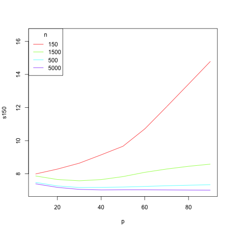

14 A Deeper Look at Overfitting
We have mentioned the concept of “overfitting” occasionally in previous chapters. It has always been an issue in statistics, but in recent years it has become an acute problem as datasets with very large number of predictors \(p\), and old assumptions are now being questioned. This chapter presents an up-to-date view of the topic, and as usual, linear algebra plays a key role.
14.1 Motivating Example
Classically, statistics and ML books have stated that, for fixed number of data points \(n\), the graph of predictive accuracy against number of predictor variables \(p\) roughly has a U-shape, concave up. Starting at \(p = 1\) and then increasing \(p\), we achieve better and better predictive power until we reach the minimum point of the U; adding further predictors degrades performance.
We wish to explore this notion on the Million Song dataset from ?sec-millonsong. Here “Y” is the year of release of a song, stored in the first column with label V1. “X” is a set of 90 audio measurements. In the version of the dataset used here, we have 5000 rows.
We ran code like this:
sapply(seq(10,90,10),function(p)
mean(replicate(500,
qeML::qeLin(yr5000[1:150,1:p],'V1')$testAcc
)))Here we are running a linear model on the first 150 rows of the dataset (i.e. \(n=150\)), and the first \(p\) columns, so that \(p = 10,20,...,90\). Since the \(qeML\) functions automatically form holdout sets, we obtain the accuracy value, Mean Absolute Prediction Error. And since the holdout set is randomly chosen, we do this 500 times. We graph the result using qePlotCurves (which does smoothing).

What do we see here?
The graphs are indeed U-shaped, albeit often shallower than the typical pictures shown in books.
The larger the value of \(n\),
the lower the curve (better prediction accuracy), and
the larger the value of the best \(p\) (optimal to use more predictors)
Some are half-U’s, indicating it’s best to use all variables (large \(n\)) or one or two (small \(n\)).
14.2 Interpolation Point
Consider a linear regression model, for convenience say with no \(\beta_0\) term. As \(p\) increases, eventually it becomes equal to \(n\), the number of rows. When that happens, we get a “perfect” fit: Our line, plane or hyperplane will pass through every data point, and Equation 5.3 will be 0. Just think of the case \(p=1\), now with a \(\beta_0\) term: Two points in \(\cal{R}^2\), through which we can draw a line passing through them.
This value of \(p\) is thus called the interpolation point, viewed classically as follows.
Of course, setting \(p\) to be the interpolation point would will be a terrible fit, unable to predict new data well; we are at the right-hand end of the U.
And since we already have reached a “perfect” fit, there would be no point in increasing \(p\) any further (using a pseudoinverse).
So, pictures of overfititng in books had \(p\) stop at \(n\). But wow, were they wrong!
14.3 Double Descent
Though the prevailing wisdom used to be that, as noted above, there is no point in trying values of \(p\) even near \(n\), let alone beyond \(n\). It turns out that in some cases, the best value of \(p\) is in fact larger than \(n\)
As a first step to seeing this, consider the following code:
overfit <- function(nreps,n,maxP)
{
require(qeML)
load('YearData.save') # 500K Million Song data
nas <- rep(NA,nreps*(maxP-1))
# record p, Mean Absolute Prediction Error
outdf <- data.frame(p=nas,mape=nas)
rownum <- 0
for (i in 1:nreps) {
idxs <- sample(1:nrow(yr),n)
trn <- yr[idxs,]
tst <- yr[-idxs,]
for (p in 2:maxP) {
rownum <- rownum + 1
out<-qePolyLin(trn[,1:(p+1)],
'V1',2,holdout=NULL)
preds <- predict(out,tst[,-1])
mape <- mean(abs(preds - tst[,1]))
outdf[rownum,1] <- p
outdf[rownum,2] <- mape
print(outdf[rownum,])
}
}
outdf
}
z <- overfit(10,250,30)
w <- tapply(z$mape,z$p,mean)
plot(w)This code tries values of p up to maxP but one must note that we are fitting quadratic models. For any given value of p, the number of columns after polynomial expansion will be much larger. Consider this code:
> u22 <- qePolyLin(yr[1:100,1:23],'V1',deg=2)
P > N. With polynomial terms and interactions, P is 265.
> u22 <- qePolyLin(yr[1:100,1:22],'V1',deg=2)
P > N. With polynomial terms and interactions, P is 246.So \(p = 21\) will upon polynomial expansion produce 246 columns, while \(p=22\) will produce 265. We won’t hit 250 exactly, but the interpolation point will be in this range.
After the interpolation point, we see another U! Hence the name double descent. This introduces the concept, but the big news is:
The minimum of the second U is sometimes lower than that of the first. In other words, it can pay to overfit!
We’ll see examples shortly, but first let’s see how linear algebra plays a role.
14.4 Plausibility of Double Descent: the Minimum Norm Solutions
In an overdetermined linear system such as Equation 13.5, there are many solutions. Our qePolyLin function calls regtools::penrosePoly. An advantage of Moore-Penrose is that it gives us the minimum norm solution. We’ll discuss the significance of this for Double Descent shortly, but let’s prove it first.
14.4.1 Proof of the minimum-norm property
We will need this:
Theorem 14.1 (Multiplication by an Orthogonal Matrix Preserves Norm) For an orthogonal matrix \(M\) and a vector \(w\), \(||Mw|| = ||w||\).
Proof. See the Your Turn problem below.
Theorem 14.2 (The Moore-Penrose Solution Is Min-Norm) Consider an \(m \times n\) matrix \(B\) and vector \(q\) of length \(m\). Of all solutions \(x\) (of length \(n\)) to
\[ Bx = q \tag{14.1}\]
the Moore-Penrose solution minimizes \(||x||\).
Proof. Again, write
\[ B = U \Sigma V', \]
where \(U\) is \(m \times n\) and \(\Sigma\) and \(V\) are \(n \times n\). (For our discussion of overfitting, we will primarily be interested in the case \(n > m\).)
Consider the residual sum of squares
\[ ||Bx - q||^2 = ||U \Sigma V' x -q||^2 \tag{14.2}\]
so
\[ ||Bx - q||^2 = ||U (\Sigma V' x - U'q)||^2 \tag{14.3}\]
since \(UU'=I\).
From Theorem 14.1 we can remove the factor \(U\) in Equation 14.3, yielding
\[ ||Bx - q||^2 = ||\Sigma V' x - U'q||^2 \tag{14.4}\]
Rename \(V'x\) to \(w\) and \(U'q\) to \(s\) (a constant vector):
\[ ||Bx - q||^2 = ||\Sigma w - s||^2 \tag{14.5}\]
So, instead of finding \(x\) to minimize the residual sum of squares \(||Bx - q||^2\), we’ve (temporarily) changed the problem to that of finding \(w\) to minimmize
\[ ||\Sigma w - s||^2 \tag{14.6}\]
Now bring in the fact that \(\sigma_i = 0\) for \(i > r\), with \(r\) being the rank of \(B\). That has the interesting implication that \(w_{r+1},....,w_n\) can be anything whatsoever, in Equation 14.6 – the value of that expression is completely independent of \(w_{r+1},....,w_n\). So that shows that if \(r < n\), there are infinitely many solutions \(w\), and thus infinitely many solutions to \(Bx = q\), since \(x = Vw\).
Recall that our goal is to find the minimum-norm value of \(x\), and since \(||x|| = ||w||\) (Theorem 14.1), our problem is thus reduced to finding the minimum-norm \(w\).
Now since
\[ ||w||^2 = w_1^2+...+w_r^2+w_{r+1}^2+...+w_n^2 \]
and since we have a free hand in choosing \(w_{r+1},...,w_n\), we minimize \(||w||\) by setting those \(n-r\) values to 0.
Thus we can make Equation 14.6 equal to 0, i.e. exact fit, by setting
\[ w = \Sigma^{+} s \]
where \(\Sigma^{+}\) is the diagonal matrix with elements \(\sigma_1^{-1},...,\sigma_r^{-1},0,....,0\).
Wrapping up, we have
\[ x = Vw = V \Sigma^{+} U' q \]
Exactly the Moore-Penrose inverse!
\(\square\)
14.4.2 Connection to Double Descent
First, consider the minimum norm solution \(x_{min}\) in our last section, with \(p > n\), i.e. post-interpolation.$ Intuitively, shorter solutions have less variability, i.e. smaller variance. Moreover, all the solutions have a 0 residual sum of squares. It is thus plausible that \(x_{min}\) might do better than the value of \(x\) we obtain at interpolation, hence a downward trend in the curve of predictive accuracy against \(p\). On the other hand, as \(p\) grows further, \(x\) has more and more components, and likely that minmum-norm \(x\) will grow in length at some point, hence the typical U-shope – as our second U.
In addition, if gradient descent is used to minimize the least-squares problem, the tendency is that the result will be of minimum norm.
14.5 Plausibility of Double Descent: the Condition Number
We briefly mentioned the condition number of a square matrix \(A\) back in Section 11.7, the ratio of the maximal and minimal eigenvalues. High values suggest problems of multicollinarity
If \(A\) is nonsquare, as in our setting in this chapter, one can apply the same criterion to \(AA'\). Then we can go through the same exercise as above, starting with \(p=1\), i.e. using only the first column of \(A\), then adding more and more columns. It turns out that if we graph condition number agains \(p\), we again see Double Descent behavior! And again, the peak will occur at the interpolation point.
Here is the code, run on the Million Song data:
cn <-
function(a)
{
aap <- a %*% t(a)
evs <- eigen(aap)$values
max(evs) / min(evs[evs > 1.0e-02])
}
u <- seq(55,85,1)
z <- sapply(u,function(p) cn(yr[1:75,1:p]))
plot(u,z,cex=0.5)There it is, a peak at \(n=p\).
Now, how might this relate to the original (accuracy vs. \(p\) Double Descent problemm? Recall that a large condition number indicates multicollinarity, which in turn causes high variance in \(\widehat{\beta}\), thus impaired predictive ability.
14.6 Your Turn
❄️ Your Turn: Show that for an orthogonal matrix \(M\) and a vector \(w\), \(||Mw|| = ||w||\).
❄️ Your Turn: Using properties of matrix rank, show that if \(p+1 > n\) in Equation 5.8, the inverse will not exist.